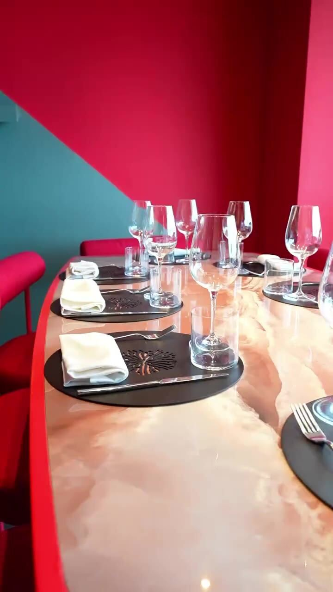

«La cucina non ha confini»
Un viaggio che parte dal Mediterraneo e non conosce frontiere.
A Pozzuoli, tra il mare e i Campi Flegrei, Confini è il luogo dove le cucine dialogano: la tradizione napoletana incontra la Spagna e il Giappone in un unico racconto. Croquetas e gyoza, aragosta e baccalà, tecniche diverse che si cercano fino a diventare un solo gesto.
Sotto la guida dello chef Giuseppe Mellone, ogni piatto è una tappa: sapori netti, materie prime del territorio e una sala calda, dal rosso profondo, pensata per fermarsi e godersi il tempo. Perché il gusto, qui, è un racconto senza confini.
Una selezione dalla nostra cucina. Il menu completo, con carta dei vini e birre, è a un tocco di distanza.
Cene private, ricorrenze, aziende: Confini accoglie i tuoi momenti con un menu su misura e la stessa cura del servizio di sala. La cornice è quella di sempre — il rosso della sala, il tavolo effetto marmo, i calici pronti.
Scegli data, orario e numero di ospiti sul nostro sistema di prenotazione. In pochi istanti il tavolo è tuo — ti aspettiamo a Confini.
Preferisci la chat? Scrivici su WhatsApp e pensiamo a tutto noi.